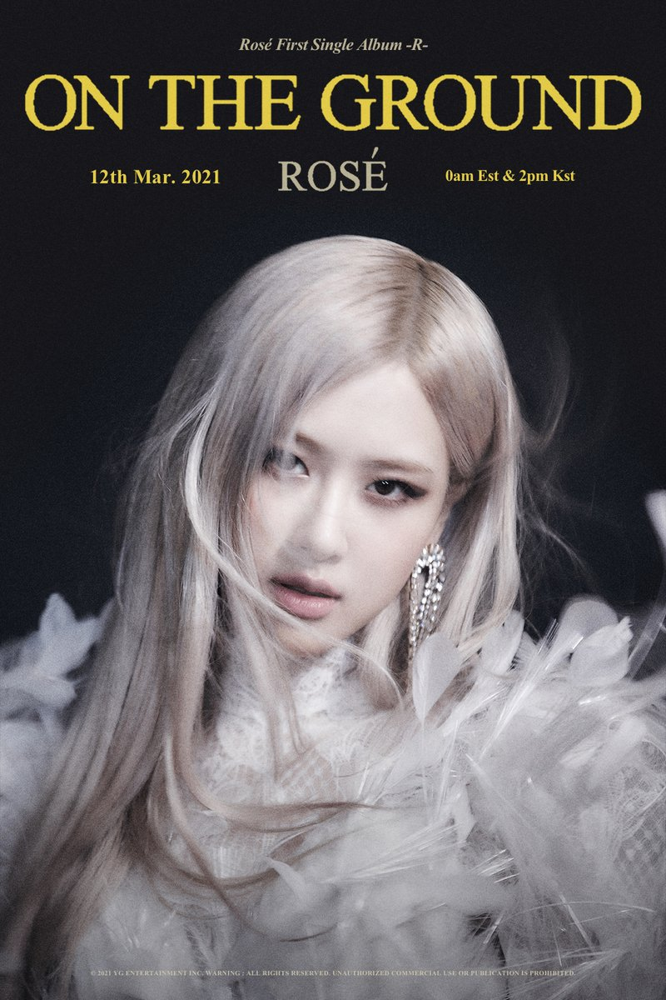

ROSÉ - 'On The Ground'

-R- Album
อัลบั้ม -R- ประกอบไปด้วยสองแทร็กด้วยกัน โดยมี 'On The Ground' เป็นไตเติ้ลแทร็กซึ่งเป็นผลงานเพลงภาษาอังกฤษล้วนที่สร้างโดยโปรดิวเซอร์มือทองระดับโลกอย่าง Jorgen Odegard ที่ได้ทำเพลง Holy - Justin Bieber, Ojivolta กับอัลบั้ม Rare - Selena Gomez, Jon Bellion ผู้ร่วมงานกับ Katy Perry และ Miley Cyrus, 24 และแน่นอนว่ายังมี TEDDY ผู้อยู่เบื้องหลังซิงเกิ้ลฮอตฮิตของ BLACKPINK ส่วนซิงเกิ้ล 'Gone' ที่ใครหลายคนได้ฟังกันไปในคอนเสิร์ต The Show ที่ผ่านมานั้น สาว ROSÉ ของเราก็ได้มีส่วนในการแต่งเนื้อเพลงอีกด้วย
สไตล์เพลงของ On The Ground นั้นค่อนข้างที่จะแตกต่างจากสไตล์เพลงของ BLACKPINK ซึ่งเป็นไปตามที่ YG ได้เผยไว้ก่อนหน้านี้ว่าผลงานเพลงใหม่ของสาว ROSÉ จะมีเสียงร้องที่หวานและเต็มไปด้วยอารมณ์ ถือเป็นผลงานที่ทำให้เราได้เห็นความสามารถของ ROSÉ ในอีกมุม แฟนๆ คนไหนอยากรู้ว่าผลงานใหม่ของเธอจะไพเราะโดนใจแค่ไหน ลองไปฟังกันได้เลย!